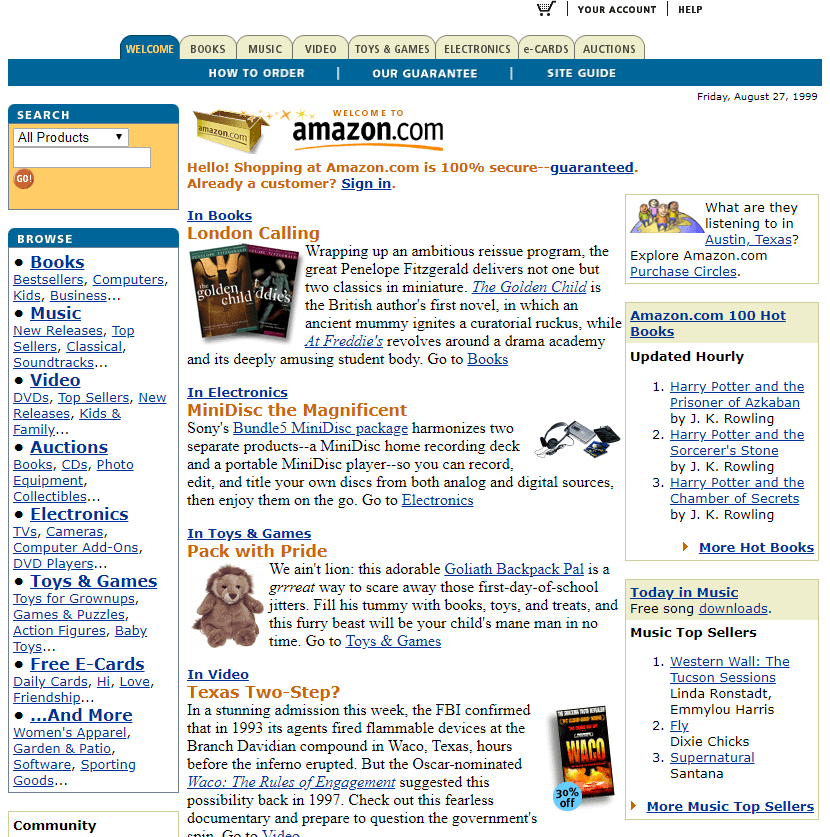

| 1999 |
| Favicon |
introduction of the webpage icon that appeared in older browsers in the address bar next to the URL or in favorites |
| Internet Explorer 5.0 |
browser that was integrated with the Windows 98 SE operating system, and later, with the version 5.01, was part of Windows 2000, by Microsoft |
| Web 2.0 |
term introduced by Darcy DiNucci referring the production of contents by the users themselves, such as in social networking sites, web forums, internet encyclopedias, or photo/video sharing portals |
| WCAG 1.0 |
introduction of new principles of accessibility |
| Adobe Photoshop 5.5 |
new version of Photoshop that included the Adobe ImageReady 2.0 and provided more tools to work with web graphics |
| Blogger.com |
blogging platform, by Pyra Labs, later bought by Google |
| MONO*crafts |
world-first on horizontal scrolling, interactive zooming menu and mouse trailers, by tha |
| Dennis Interactive |
first website to allow color customisation |
| Crash!Media |
first website using drag-and-drop navigation |
| Superchannel |
internet art network of local studios used by people and communities as a discussion forum, by Superflex |
| 2000 |
| XHTML 1.0 |
specifications by W3C for the Extensible HyperText Markup Language (XHTML), a markup language originated from the integration of XML and HTML |
| The FWA |
online gallery of unique and innovative websites in terms of design created with Macromedia Flash |
| PHP 4.0 |
new version of PHP based on an open source scripting engine called Zend Engine, by Zeev Suraski and Andi Gutmans |
| Macromedia Flash 5.0 and ActionScript 1.0 |
new version of Macromedia Flash that included the ActionScript 1.0 programming language |
| Human-Computer Interaction (HCI) |
UX designer and information architect Steve Krug, in his book Don’t Make Me Think, explores the notions of web usability and the interdisciplinary field of HCI |
| Barneys New York |
website using a new kind of menu system, which became known as Barneys scroller, by Kioken |
| Nosepilot |
one of the first websites using interactive animation series |
| 2Advanced v1 |
first website to use floating and draggable windows |
| Making Sense of it All |
internet art work about the Internet itself using GIF animations, by Blank & Jeron |
| 2001 |
| Wikipedia |
introduction of the participatory multilingual internet encyclopedia, by Jimmy Wales and Larry Sanger |
| Internet Explorer 6.0 |
new version of IE that was integrated into Windows XP |
| SVG 1.0 |
specifications by W3C for the Scalable Vector Graphics (SVG), later supported by all major browsers |
| Wayback Machine |
introduction of an archive of websites by The Internet Archive organisation |
| 2Advanced Studios v3 Expansions |
considered the most influential Flash Website |
| Nooflat |
the first resizing website |
| Tongsville |
one of the first websites using live feeds from satellites for weather reports, by Preloaded |
| TraceNoizer |
internet art work based on the issue of electronic surveillance, by LAN |
| 2002 |
| Mozilla 1.0 |
web browser based Gecko, an open source rendering engine |
| Friendster |
social network website |
| Perfect Fools |
first online effect to mimic turning the page of a book |
| Looplabs |
first online tool with music loops to play with an easy interface to mix, by Crash!Media |
| Eagle F1 |
the first to integrate video within a website, by EVB |
| VOPOS |
internet art work about the concept of privacy using different networks and GPS transmission, by 0100101110101101.ORG |
| 2003 |
| WordPress 0.7 |
open source content management system based on PHP and MySQL |
| Safari 1.0 |
Apple web browser |
| MySpace |
social network inspired on Friendster social network |
| Delicious |
social bookmarking service for discovering and sharing web bookmarks |
| iTunes |
Apple music store |
| Macromedia Flash MX 2004 and ActionScript 2.0 |
updated version of Macromedia Flash that included a new version of the object-oriented programming language ActionScript 2.0 |
| PDPal |
series of public art projects for Palm™ PDA, mobile phone and the web, by Bleecker/Paterson/Zurkow |
| Globulos |
one of the earliest multi-player realtime games |
| Samorost |
point-and-click multimedia game adventure, by Jakub Dvorsky |
| OurType |
e-commerce website dedicated to typography, by group 94 |
| Natural Process |
installation that translates the Google search engine home page to the form of a large-scale painting, and then back to digital media via webcam, by Exonemo |
| Amazon |
|

|
An American multinational technology company based in Seattle, Washington, which focuses on e-commerce, cloud computing, digital streaming, and artificial intelligence. |
|
| Apple |
|
|
An American multinational technology company headquartered in Cupertino, California, that designs, develops and sells consumer electronics, computer software, and online services. |
|